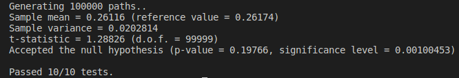
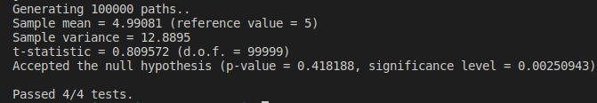
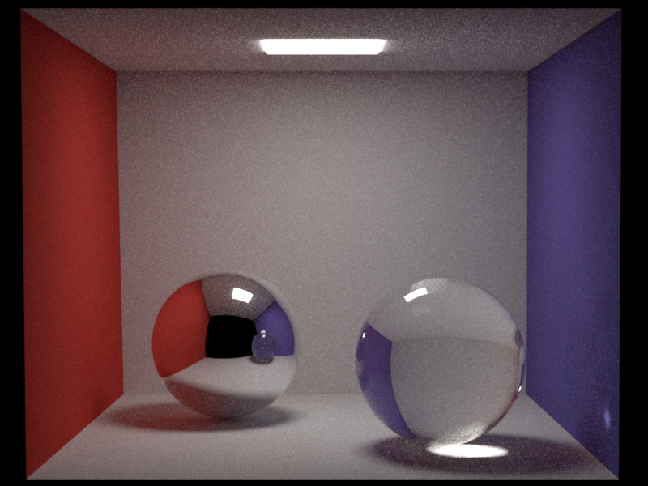
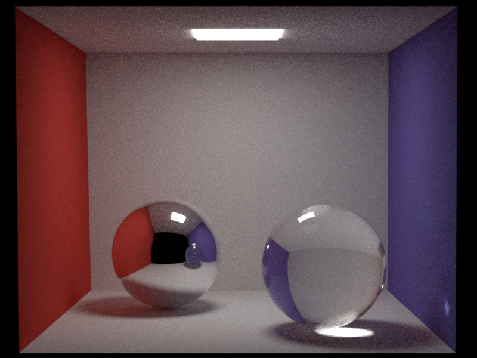
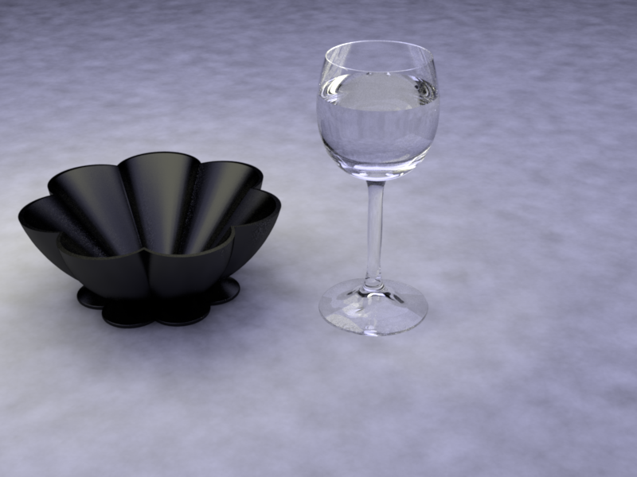
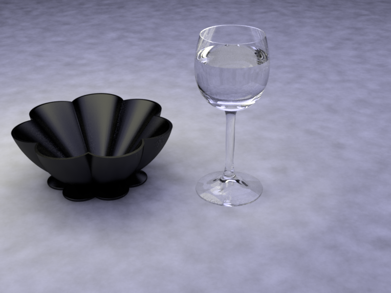
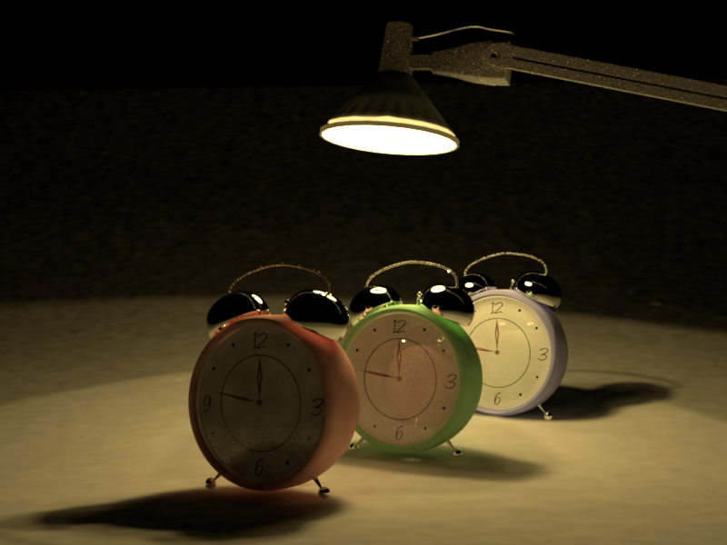
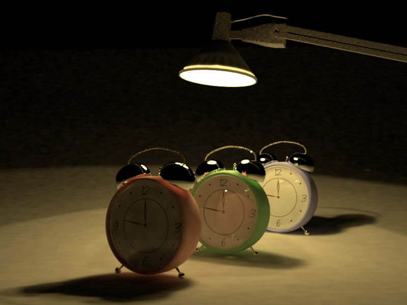

Part 1: Dielectric BSDF
Files modified: dielectric.cpp
First I calculate the probability of reflectiona vs. refraction using the fresnel equation (F). The task requires the probability of a reflection event takes place is proportional to F. Therefore, I randomly sample a pdf and compare it with F. If the pdf is smaller than F, the reflection event takes place and the direction of the outgoing light is same as what mirror.cpp is implemented. If not, the refraction event takes place. The outgoing light's direction is calculated using snell equation.
Part 2: Path Tracing
Files modified: path_mats.cpp, path_mis.cpp
path_mats Implementation
The code is similar with direct_mats integrator, but add a while-loop. The loop is broken by using the Russian Roulette technique.
path_mis
The code is implemented according to the pseudocode in the tutorial for exercise 4.
Validation
The first screenshot is test result from test-direct.xml, and the other is test result from test-furnace.xml

Cornell box scene
 


Table scene

Part 3: Photon Mapping
Files modified: arealight.cpp, photonmapper.cpp
Validation
Cornell box scene

Table scene
 

Clocks scene
 
